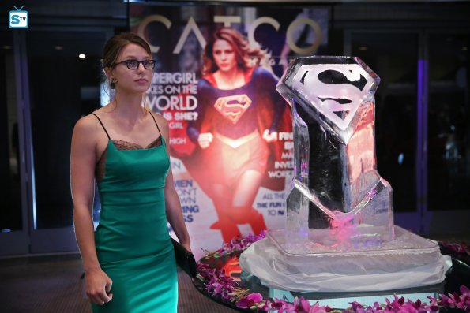

Supergirl S01|E03 Fight or Flight
Picking up right where “Stronger Together” left off, Supergirl gives the big “exclusive” interview to a delightfully smarmy Cat Grant, which amounts to little more than a brief conversation before Kara lets it slip that Big Blue is, in fact, her cousin. While it definitely doesn’t have the impact of the classic “first interview” between Lois and Superman, Supergirl does get a pretty definitive moment that confirms the show’s devotion to feminism. When Cat asks her if she intends on starting a family, Kara replies “Nobody ever asks my cousin these questions.” It’s a great commentary on sexism in the media, while doubling as a powerful moment for our hero.
“Fight or Flight” deals with a very important question that is both a sort of meta logistical question as well as a very important character beat: why doesn’t Kara call Superman for help? I’m glad to see the show addressing this so early on, because it stands to reason that, yes, Kara could conceivably call in the Man of Steel for back-up when she’s feeling overwhelmed (but then there’d be no show). The key here is that Kara wants Supergirl to stand on her own – she makes a powerful point about how Clark didn’t have help when he first started, even if he wanted it – and that’s what helps the show answer this question. At least, until Superman shows up to save the day.
It was disappointing that Superman literally swooped in to save Kara from Reactron during their junkyard battle. While my initial reaction was to shout at the television about how Superman would never betray faith in his cousin like that, my sudden disappointment in the Man of Steel was alleviated when it was revealed that it was in fact James that undercut Kara’s trust. I was glad to have the chat/text sequence at the end of the episode to explain that Superman “had a talk” with James about the situation and assured her that it wouldn’t happen again. Even better, Clark Kent, award-winning journalist, uses smiley faces in his chats.

The other major component of this episode was Maxwell Lord, whom Reactron kidnaps when he needs help repairing his suit. Peter Facinelli’s Lord isn’t all that appealing, offering a typical playboy cockiness that tries to capture the spirit of Tony Stark but is one third as convincing. Lord isn’t particularly likable, even when he’s paired with the delightful Cat Grant in a cringe-inducing dance scene littered with bad sexual innuendo. Cat is a standout in this episode (her treatment of poor Ginger Dave was a definite highlight); Flockhart is able to walk that line of insufferable and likable that Facinelli doesn’t manage this time around. I’m attracted to the idea of these two egos clashing with one another, but it just doesn’t work in “Fight or Flight.”
Next weeks episode preview: